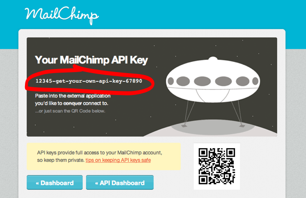
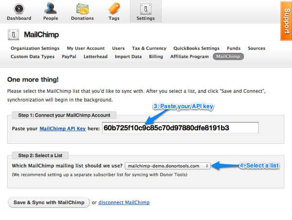
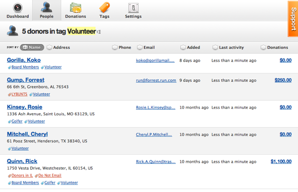
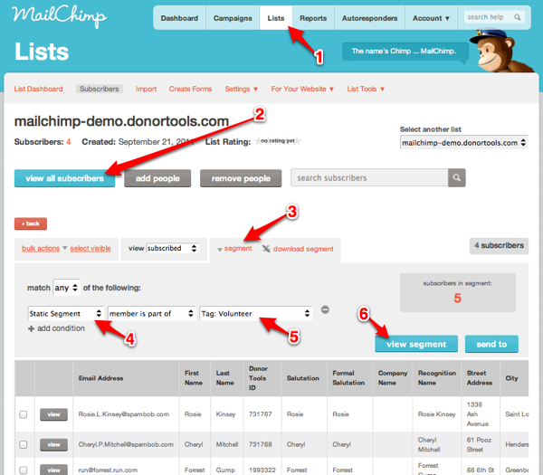
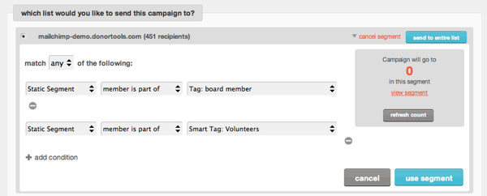
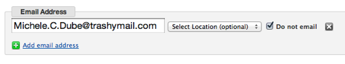

MailChimp Integration
Donor Tools provides easy integration with MailChimp. MailChimp helps you design email newsletters, share them on social networks, integrate with services you already use, and track your results.
And now, with Donor Tools integration, you can easily send email campaigns to your Donor Tools database using MailChimp. Here’s how it works:
First, you’ll set up your MailChimp integration and tell Donor Tools to sync with your MailChimp account. Donor Tools uploads your entire mailing list to MailChimp. We even segment your list using your Donor Tools Tags and Smart Tags so that you can easily send targeted campaigns.
Now, keep working in your Donor Tools database. Any changes that you make to your subscriber list will be sent to your MailChimp list, and any changes that you make on MailChimp will automatically show up in your Donor Tools database.
Get your MailChimp API Key
- Sign in to your MailChimp account, or sign up for a new MailChimp account.
- Create a new list in MailChimp.
- Copy your API Key from MailChimp.

Set up Donor Tools to communicate with MailChimp
- Sign in to your Donor Tools account.
- Click Settings, then “MailChimp”.
- Paste your API Key (from MailChimp) into the form, and click “Connect with MailChimp”.
- Select the MailChimp list that you’d like to sync with, and click “Update MailChimp”.

That’s it, your’re done. Synchronization will happen in the background. You can now go to your MailChimp list to watch the results come in.
Segmenting Your Mailing List
Donor Tools automatically segments your email list in MailChimp. This is done by setting up Static Segments for each one of your Donor Tools Tags and Smart Tags. Your mailing list is automatically segmented using all the tags and smart tags that you’ve set up in Donor Tools.

In MailChimp, Static Segments will show up in your list dashboard. You can also send an email campaign to one or more of your Donor Tools Tags by selecting the static segments in MailChimp.
Here’s how to view the Static Segments in MailChimp that have been synced from Tags in Donor Tools:
- In MailChimp, click on Lists, then select your list.
- Click “view all subscribers”.
- Click “segment”.
- In the first selection menu, select “Static Segment”.
- In the last selection menu, select the name of the tag that you want to view.
- Click “view segment” to view the recipients. Now you can click “Send to” to send a message to just these recipients.

You can also use MailChimp’s Campaign Builder to send a campaign to more than one segment.

Subscribing and Unsubscribing
If an email subscriber unsubscribes from your list, that information will show up in Donor Tools. You’ll see an indicator that the particular email address has been unsubscribed, and the “Do not Email” box will be checked.
You can also unsubscribe someone in Donor Tools. Simply select “Do not Email” when editing the person’s record. When you save the record, the person will automatically be unsubscribed in MailChimp.

Changing an Email Address & Updating Subscribers
Donor Tools’ integration with MailChimp goes both ways. You can update subscriber information in MailChimp, and it will automatically be recorded in Donor Tools.
Or, you can update your mailing list in Donor Tools, including changing someone’s email address, and the changes will automatically be reflected in your MailChimp list.